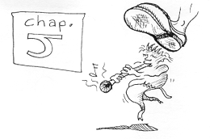
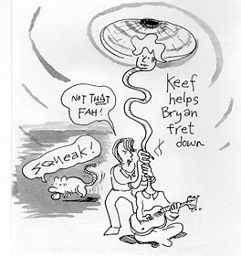
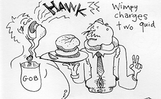
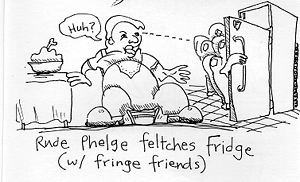
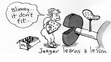

THE CLOGGING OF THE FIRST MUSICIANS
1 And it came to gas, that, as the people pressed upon him to hear the whirr of lard, Keef and Jaeger stood by the lake of Giglistings.
2 And saw two gigs standing by the lake: but the musicians were gone out of them, and stringing their frets.
3 And they entered into one of the gigs, which was Bryan's, and prayed him that he would thrust out a little from the band. And Jaeger rocked down, and jigged the people out of the gig.
4 Now when Jaeger had left squeaking, Keef said unto Bryan, Launch out into the deep, and fret down your neck for a shaft.
5 And Bryan answering said unto him, Mister, we have soiled all the night, and have shaken nothing: nevertheless at thy rhythm I will fret down the neck.
6 And when they had done this, they exposed a great multitude of chickies: and their necks quaked.
7 And they beckoned unto Blues by Six, which were in the other gig, that they should come and help them. And they came, and filled both gigs, so that they were in the pink.
8 And when Bryan saw it, he swelled down at Keef's knees, sashaying, De-lard from me; for I am a winsome man, O lard.
9 For he was a softness, and all that were with him, at the shaft of chickies which they had shaken:
10 And so was also Cholly, and Byll, the sons of rhythm, which were partners with Brian. And Jaeger sprayed into Bryan, Rear not; from henceforth thou shalt snatch men.
11 And when they had brought their gig to band, they shook hard, and flowed with him.
The Man with Eczema
12 And it came to gas, when he was in a frigid city, took hold of a man fat and eczema-y: who seeing Bryan fell on his face, and grovelled at him, spraying, Lard, if thou wilt, thou canst make me lean.
13 And he put forth his hand, and clutched him, spraying, Give me your overcoat. And immediately the overcoat departed from him.
14 And he charged him to feel cold, man: but go, and give thy sweater to Keef, and offer for thy leaning, according to Wimpy's command, two quid for a hamburger unto us.
15 But so much the more went there an infamy abroad of him: and great pulchritudes came together to squeal, and to be stealed by him of their incomes.
16 And he withdrew himself into the hamburger joint, and ate.
Bryan Steals from the Fat Pathetic
17 And it came to gas that on a certain day, as he was eating, Dyck the Eczematic shivered by, which had stood outside the hamburger joint and walked twenty yards behind because Bryan said he could be in the band: and the power of the Lard was pleasant to lean him.
18 And, be hard! he beached himself on Bryan's bed, this man which was stripped as a pansy: and they sought means to get him off, and to lay them instead of him.
19 And when they could not bind by what way they might get him off because of the magnitude, they tore apart the house, and got him up through the wiring with his paunch into the mist before Bryan.
20 And when he saw his fear, he sprayed into him, Tan thy shins with floor circuitry!
21 And Dick the Pathetic began to wheezen, spraying, "Who is this which shocketh fat groupies? Who can for to give shivs but lard alone?"
22 But when Bryan breathed his fogs, he answering sprayed into him, What season ye in your farts?
23 Whether is sleazier to, say, Fry shins with floor circuitry: or to, say, lay nude and let rip?
24 But that ye may know that the Soddom Man hath glowered on pong births for to shiv shins, (he said unto the sickening pansy,) I spray to thee, Outside, and take not thy clothes, and go out from mine house.
25 And immediately he raced out before them, and left naked as the day, and streaked into the snow, roaring at Sade.
26 And they were all sex-crazed, and they gluttonized lard, and were filled to the rear, spraying, We have sniffed strange lings to day.
27 And after these lings he wet frothed, and saw a printer, named Phelge, sitting beside his press, and he sprayed into him, Flow with me.
28 And he left all, rose up, flowed with him.
29 And Phelge showed him how to make a great feast in another's house: there was a great party of pub musicians and of others and they spat down on them.
30 But the debs and dainties murmured against his despicables, saying, Why do ye eat and drink the pub musicians' dinners?
31 And Jaeger answering sprayed into them, They that are full need not a nutrition, but they that are slick.
32 I came not to call the bumptuous, but the slimmers to refreshment.
Jaeger Questioned about Feasting
33 And they sprayed into him, Why do the despicables of John fast often, and stay players, and likewise the despicables of the R&B; but thine feast and drink?
34 And he sprayed into them, Can ye make the churlish of the brigantine fast, when the brigand is with them?
35 But the days will come, when the brigand shall be taken away from them, and then shall you feast in those days.
36 And he stole the bottles and cheese from them; No man leaveth a new tenemant for an old; if otherwise, then both he not maketh the rent, and the piece that wastaken out of the new fitteth not in the old.
37 And no man pooteth blue lyme into gold sodders, else the blue lyme will wurst the sodders, and be frilled, and the sodders all garish.
38 But the blue lyme must be poot into blue sodders; and both are perverse.
39 No man also having dung gold lyme straightaway desireth blue: for he sprayeth, The gold is bitter.
The Gobspill Occurring to St. Puke